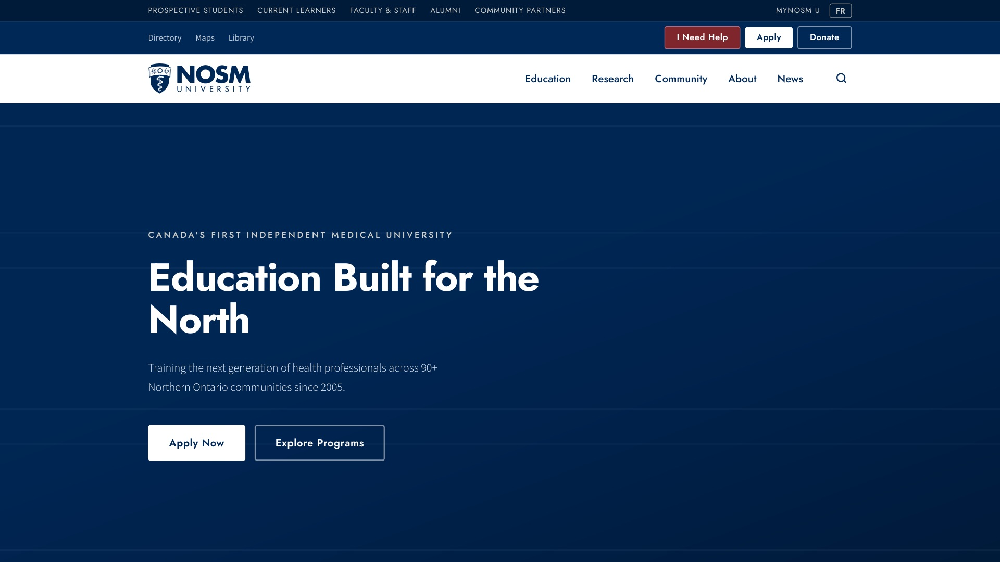
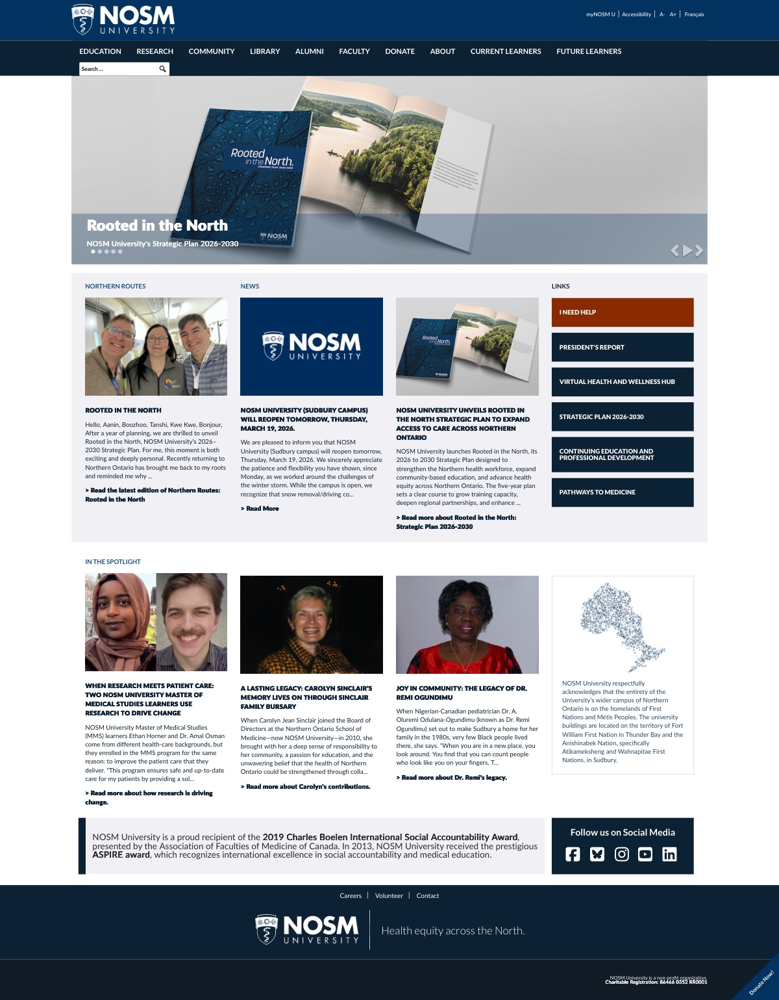
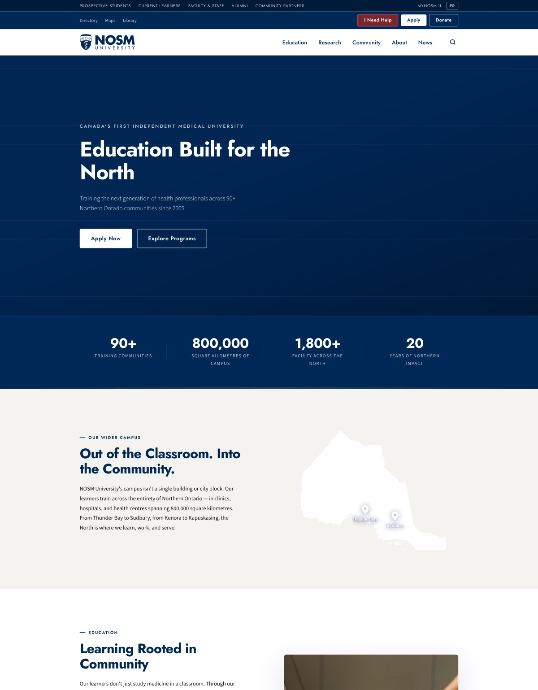
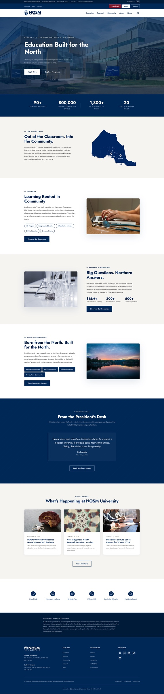

nosm.ca Redesign Proposal
An audit, a prototype, and a pitch to the people who could say yes.

nosm.ca carries 1,900+ pages for a university of 224 students. UT Austin serves 53,800 students with a smaller site. On top of that, AODA accessibility law carries fines of up to $100,000 a day for non-compliance. I audited every URL, pulled the analytics with our digital strategist, redesigned the homepage, coded it as a working prototype, and presented the case in person to External Relations.
1,903
rows in the sitemap audit. Every URL on nosm.ca, categorized: content, utility, auto-generated, orphaned, or dead.
Reading all 1,900 pages so nobody else has to
Blank pages from 2018. Orphaned pages still indexed by Google. Public testing pages. I categorized every URL, benchmarked the structure against UT Austin, and costed the cleanup at roughly 2,000 hours: one full-time employee for a year. Then I checked the analytics. Of 1.16 million page views, a fifth land on the homepage and a third go to just three destinations. The site is huge; the traffic isn't.
Before and after
The current homepage is a news dump. The redesign leads with what the analytics say people actually come for: programs, admissions, and the three destinations that carry a third of all traffic. Navigation goes audience-first, and every design decision maps to one of NOSM's four strategic pillars.

BEFORE
AFTERNot a Figma file
The redesign exists as a working site: semantic HTML, ARIA on every interactive element, an 18px body-text baseline, AAA contrast throughout, and a design-token system in CSS custom properties. From the pitch deck: accessibility isn't a feature, it's the baseline. Everything above it is design.

TL;DR
- Presented in person to the External Relations team, including the AVP.
- Every recommendation backed by NOSM's own analytics and a costed remediation estimate.
- Status: a proposal. The audit and the prototype exist so the university can act on them.
Want a designer who audits 1,900 pages before touching the homepage? Let's talk.
Get in touch